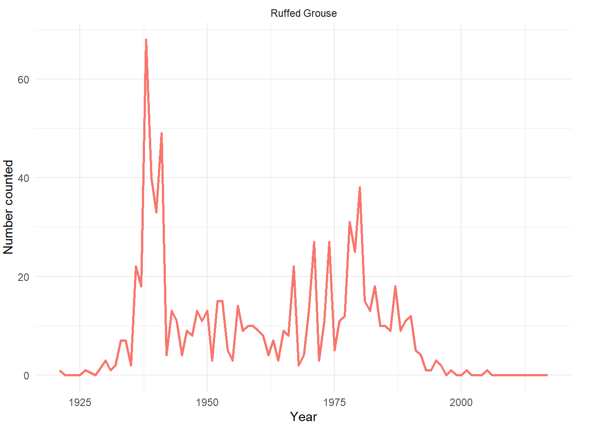

library(dplyr)
library(readr)
library(ggplot2)
library(here)
theme_set(theme_minimal())
hamilton_cbc <- read_rds(here("posts",
"2019-03-24-hamilton-cbc-part-3",
"hamilton_cbc_shiny",
"hamilton_cbc_output_part_2.rds"))This is a series of five posts for this data:
Introduction
What am I hoping to learn from this dataset?
Compare the first count year’s data to the latest year
See how many species are seen each year
Highlight certain species to look at any changes over time
To start, we’ll load all of the packages we’ll be using, set the plot theme and load the data:
A wonderful reference I’ve been using for this post is the book Birds of Hamilton and Surrounding Areas by Robert Curry and the Hamilton Naturalists’ Club, particularly the chapter called Hamilton Christmas Bird Count by Ian Richards.
Visualizing
Comparing the count’s first and latest year
Let’s start by looking at the first year anyone went out to do the count, in 1921. In Curry (2006), Ian Richards mentions that 2 observers went out that year for 8 hours, and they saw 9 species.
hamilton_cbc %>%
filter(year == min(year),
how_many_counted != 0) %>%
select(species, how_many_counted) %>%
arrange(-how_many_counted, species)# A tibble: 9 × 2
species how_many_counted
<chr> <int>
1 American Tree Sparrow 12
2 Black-capped Chickadee 9
3 Blue Jay 3
4 Downy Woodpecker 2
5 White-breasted Nuthatch 2
6 American Robin 1
7 Brown Creeper 1
8 Gray Jay 1
9 Ruffed Grouse 1Oh wow, they saw a Gray Jay! How many times have Gray Jays been seen on Hamilton Christmas Bird Counts?
hamilton_cbc %>%
filter(species == "Gray Jay",
how_many_counted != 0)# A tibble: 1 × 6
year species species_latin how_many_counted total_hours
<int> <chr> <chr> <int> <dbl>
1 1921 Gray Jay Perisoreus canadensis 1 8
# ℹ 1 more variable: how_many_counted_by_hour <dbl>That was the only time! At first I thought it might have been a mistake, but Curry (2006) mentions, in the Gray Jay historical records section, that at least two Gray Jays were seen that winter. (This book is so thorough!)
How does the first year’s count compare to the most recent year’s count?
hamilton_cbc %>%
filter(year == max(year),
how_many_counted != 0) %>%
arrange(-how_many_counted, species) %>%
head(15)# A tibble: 15 × 6
year species species_latin how_many_counted total_hours
<int> <chr> <chr> <int> <dbl>
1 2017 Canada Goose Branta canadensis 6665 199.
2 2017 Mallard Anas platyrhynchos 5034 199.
3 2017 Long-tailed Duck Clangula hyemalis 3465 199.
4 2017 European Starling Sturnus vulgaris 2844 199.
5 2017 House Sparrow Passer domesticus 2731 199.
6 2017 Common Goldeneye Bucephala clangula 2180 199.
7 2017 Greater Scaup Aythya marila 1378 199.
8 2017 Dark-eyed Junco Junco hyemalis 1068 199.
9 2017 Black-capped Chickadee Poecile atricapill… 935 199.
10 2017 Rock Pigeon Columba livia 875 199.
11 2017 White-winged Scoter Melanitta fusca 725 199.
12 2017 Mourning Dove Zenaida macroura 699 199.
13 2017 Ring-billed Gull Larus delawarensis 629 199.
14 2017 Northern Cardinal Cardinalis cardina… 550 199.
15 2017 American Goldfinch Spinus tristis 473 199.
# ℹ 1 more variable: how_many_counted_by_hour <dbl>Those species look more familiar! And almost 200 person-hours were put in, amazing!
In 2017, how many species were seen in total?
hamilton_cbc %>%
filter(year == max(year),
how_many_counted != 0) %>%
count() %>%
pull()[1] 100100 species, nice! It’s not easy to get 100 species during a Christmas Bird Count. Only four other Ontario Christmas Bird Counts have done it, at least by 2004 (the latest year of Christmas Bird Count data in Curry (2006)).
Number of species counted each year
Below is a re-creation of a plot found in Curry (2006). It’s a plot of the number of species seen and the number of person-hours put in each year. Person-hours are the total number of hours the counters put in during that count. For example, if 3 people went out for four hours, there were 12 person-hours (4 * 3).
hamilton_cbc %>%
group_by(year, total_hours) %>%
# Bringing total_hours along for the grouping.
# Adding it won't affect the grouping because its value is constant within
# the grouping of each year, and this way we can use it for plotting
# after we use summarise
filter(how_many_counted != 0) %>%
summarise(number_of_species_that_year = n()) %>%
ungroup() %>%
ggplot() +
geom_line(aes(x = year,
y = number_of_species_that_year,
color = "Number of species heard or seen"),
size = 1) +
geom_line(aes(x = year, y = total_hours, color = "Number of person-hours"),
size = 1) +
labs(x = "Year",
y = "Number of species and person-hours") +
scale_color_manual(values = c("Number of person-hours" = "orange",
"Number of species heard or seen" = "blue")) +
theme(legend.title = element_blank(),
legend.position = "bottom",
legend.direction = "vertical")As the number of hours of person-hours increases, so does the number of species counted. But only up to a point, after which the number of species levels off. This probably means that, as long as there are at least 200 or so person-hours in a count, the Hamilton Christmas Bird Count counters will be finding all or almost all of the species in the Hamilton area on count day.
Here is a plot of the cumulative number of species seen during each count. I think the main take-away of this plot is that it is getting harder to see new species every year, which makes sense.
hamilton_cbc %>%
filter(how_many_counted != 0) %>%
group_by(species) %>%
filter(year == min(year)) %>% # What's the first year any species was counted?
ungroup() %>%
group_by(year) %>%
summarise(number_of_new_species_that_year = n()) %>%
mutate(cumulative_new_species = cumsum(number_of_new_species_that_year)) %>%
ggplot() +
geom_point(aes(x = year, y = cumulative_new_species), col = "orange", size = 2) +
labs(x = "Year",
y = "Cumulative number of species counted")Highlighting specific species
I now want to look at some of the species and how their counts have changed over the course of the count’s history. There is a lot to look at!
Curry (2006) mentions that the Hamilton Christmas Bird Count count circle was a different size before 1955, so, for most of the plots, I will only show information starting after 1955. But sometimes I think it‚Äôs interesting to look at all years of the data, so I might do that too! üòÑ
Since the code of these plots will be very similar, I am going to make a function for the plotting, where only the species plotted and the start year will vary:
plot_species <- function(cbc_df, start_year, species_to_plot) {
cbc_df %>%
filter(species %in% species_to_plot,
year >= start_year) %>%
ggplot() +
geom_line(aes(
x = year,
y = how_many_counted,
color = species),
# Put the size of the line outside of the aes because we're not varying it
size = 1) +
labs(x = "Year",
y = "Number counted",
color = "Species") +
facet_wrap(vars(species),
scales = "free",
dir = "v") +
scale_y_continuous(label = scales::comma) + # Add commas for thousands where necessary
theme(legend.position = "none",
plot.margin = margin(2, 20, 2, 2))
}Introduced species
Everyone is interested in introduced species. The four I will be plotting are the European Starling, the House Sparrow, the Rock Pigeon, and the Ring-Necked Pheasant.
According to Curry (2006), Rock Pigeons only started being counted in 1973 and House Sparrows in 1931 (I think due to them being introduced species).
introduced <- c("European Starling",
"House Sparrow",
"Rock Pigeon",
"Ring-necked Pheasant")
hamilton_cbc %>%
# Make Rock Pigeon values pre-1973 to be NA as they were not counted
mutate(how_many_counted = ifelse(species == "Rock Pigeon" &
year < 1973,
NA,
how_many_counted)) %>%
plot_species(start_year = 1955,
species_to_plot = introduced)Look at the number of European Starlings! It’s so interesting that the numbers peaked in the 60,000’s in the 1980’s and have since seen a sharp decrease. House Sparrow counts have been pretty consistent. Pigeon numbers have slowly increased, and there was one year, in 2005, with over double the expected number. And the Ring-necked Pheasants have declined to be almost non-existent. Curry (2006), referencing a 1973 Waterdown Review article, says that a change in urbanization pattern, with areas now going directly from intensive farming to sub-divisions, with no scrubby brush period in between (which is where the pheasants like to live), is the main reason for the decline.
Eastern Bluebird
The next species I want to look at is the Eastern Bluebird. I volunteer with a local group that maintains bluebird nest boxes and wanted to see if the Hamilton Christmas Bird Count numbers showed any changes in Eastern Bluebird numbers since the Ontario Eastern Bluebird Society started in 1988.
hamilton_cbc %>%
plot_species(start_year = 1955,
species_to_plot = "Eastern Bluebird")Perhaps the nest boxes are helping! Bluebird numbers have certainly increased since the 1980’s. Although I’m not sure what would cause such interesting cyclical increases and decreases since the late 1990’s!
However, in Curry (2006), there is a chapter by Bill Read called History of the Eastern Bluebird in the Hamilton Study Area, where he writes that the reason more bluebirds are overwintering now is mainly due to warming winter weather patterns. So maybe it‚Äôs not the nest boxes! ü§∑‚Äç‚ôÄ
Ducks
hamilton_cbc %>%
plot_species(start_year = 1955,
species_to_plot = c("Ruddy Duck",
"Long-tailed Duck",
"Greater Scaup",
"Lesser Scaup",
"Mallard")) hamilton_cbc %>%
plot_species(start_year = 1955,
species_to_plot = c("Common Goldeneye",
"Northern Shoveler",
"Ring-necked Duck",
"Surf Scoter",
"Bufflehead"))I picked a sampling of ducks that show a trend of increasing since about the mid-1990’s. Ian Richards in Curry (2006) believes that these increases are due to warmer winters (with an increase in open water), and, for ducks like the Greater and Lesser Scaup, due to the introduced Zebra Mussel in Lake Ontario, which they feed on.
Some of these increases are absolutely incredible! The Long-tailed Duck went from practically non-existent up to 25,000 in the mid-2000’s!
This is also a good reminder for me that the winter birds I think are “normal” in Hamilton (like Mallards and Long-tailed Ducks) may actually be quite recent phenomena.
Canada Goose
In fact, another bird that is very common now is the Canada Goose, which I learned, as I looked through the data, was not always so common!
hamilton_cbc %>%
plot_species(start_year = 1955,
species_to_plot = "Canada Goose")Curry (2006) talks about the Canada Goose‚Äôs history. The Canada Goose was originally considered a ‚Äúsymbol of wild, untamed Canada‚Äù and in the late 1800‚Äôs, Canada Geese actually avoided the Hamilton area due to ‚Äútheir haunts [being] invaded by trolley cars, electric lights, telegraph wires and other innovations‚Äù (Thomas McIlwraith, 1886). üöé
However, in the 1960‚Äôs, people decided to introduce the largest, heaviest sub-species of the Canada Goose into southern Ontario, because it would supposedly make Ontario ‚Äúricher‚Äù. However, with few natural predators, the Giant Canada Goose has now increased in numbers and degrades habitat and competes with other, migratory sub-species.üòë
Effects of DDT
Two species I had often heard of having been affected by the pesticide DDT were the Double-crested Cormorant and the Bald Eagle. DDT was first used in 1947 and was finally banned in Canada in 1973. According to Curry (2006), by 1980, Bald Eagles were experiencing complete reproductive failure in southern Ontario (due to the thin eggshells).
So, do the numbers match up with DDT use?
hamilton_cbc %>%
plot_species(start_year = 1955,
species_to_plot = c("Double-crested Cormorant",
"Bald Eagle")) +
geom_vline(xintercept = 1973, size = 1) +
geom_text(x = 1980,
y = 90,
label = "1973: DDT was \nbanned in Canada")Cool! The numbers of Double-crested Cormorants and Bald Eagles did increase after DDT was banned in Canada. Yay for fewer dangerous üíÄpesticidesüíÄ!
West Nile virus
hamilton_cbc %>%
plot_species(start_year = 1955,
species_to_plot = c("American Crow",
"Common Raven",
"Blue Jay")) +
geom_vline(xintercept = 2003, size = 1) +
geom_text(x = 2010,
y = 4000,
label = "2003: Height of \nWest Nile virus")I decided to plot some corvids to see how their numbers have been doing, especially given that the West Nile virus happened in the early 2000’s.
When I was younger, I remember having thousands of crows in my neighbourhood. Our neighbourhood even paid a guy to come with a trained hawk to scare them away. Nothing got them to leave… And then West Nile happened. For years afterwards, there were no crows, and now there are still only a few. My experience certainly matches with the count numbers.
The Blue Jays were also affected by West Nile, but they seem to have bounced back with no problem (according to the count numbers and my personal experience). They feed at bird feeders though, so that might be helping them.
While Ravens would have also been affected by West Nile, it doesn‚Äôt seem to show in the numbers. Perhaps there were too few birds for the virus to have had much of an impact on them. Curry (2006) says that, before the early 1800‚Äôs, Ravens were common in the Hamilton area, but retreated north due to deforestation, shooting by farmers, and eating poisoned bait set out for wolves üò†. Their recent increase in numbers maybe shows they are returning to their former area!
Snow Bunting
hamilton_cbc %>%
plot_species(start_year = 1921,
species_to_plot = "Snow Bunting")
I personally have not seen a Snow Bunting yet, but I just think their count numbers are so cool! They are an Arctic bird, so what in the world was happening in the Arctic in the 1970’s to cause such huge spikes!? Ahh, such a great mystery!
Also, in the 1800‚Äôs, Snow Buntings used to be called Snowflakes and there is this fantastic quote by Thomas McIlwraith in 1886 in Curry (2006), saying, ‚Äúall our Canadian boys and girls are familiar with the Snowflake, which is frequently the only one they see when out for the first sleigh ride of the season.‚Äù üòÑ
Ruffed Grouse
hamilton_cbc %>%
plot_species(start_year = 1921,
species_to_plot = "Ruffed Grouse")
I plotted the Ruffed Grouse (aka the partridge) since 1921, and it‚Äôs clear that this bird has been pretty much gone from the Hamilton area since the late 1980‚Äôs. Curry (2006) says the Ruffed Grouse is a bird of mixed forests, and, due to intensive agriculture, woodlot harvesting and urban sprawl, the Hamilton area no longer has the right habitat for the Ruffed Grouse. üòû
Northern Cardinal
hamilton_cbc %>%
plot_species(start_year = 1921,
species_to_plot = "Northern Cardinal")I also plotted the Northern Cardinal numbers since 1921. Cardinals used to only be in Canada occasionally at Point Pelee (Canada‚Äôs most southern point), where the first recorded breeding happened in 1901. According to O‚ÄôNeill (2006), the Point Pelee locals used to call these unusually-coloured birds ‚Äúwar birds‚Äù! üê¶
Now they are quite common in the Hamilton area through the winter, with Curry (2006) giving the reasons of climate warming (causing less snow depth), increasing edge habitats where they like to live (due to deforestation), and more bird-feeders. üå∞ üåª
This is another bird I thought had always been common to the Hamilton area!
That is it for now, but in the next blog post, I will be making a ✨Shiny app✨ so that anyone can dig into the data!
And thank you to the Christmas Bird Count! The Christmas Bird Count Data was provided by National Audubon Society and through the generous efforts of Bird Studies Canada and countless volunteers across the western hemisphere.
Session info
─ Session info ───────────────────────────────────────────────────────────────
setting value
version R version 4.3.0 (2023-04-21 ucrt)
os Windows 11 x64 (build 22000)
system x86_64, mingw32
ui RTerm
language (EN)
collate English_Canada.utf8
ctype English_Canada.utf8
tz Pacific/Honolulu
date 2023-09-21
pandoc 3.1.1 @ C:/Program Files/RStudio/resources/app/bin/quarto/bin/tools/ (via rmarkdown)
─ Packages ───────────────────────────────────────────────────────────────────
package * version date (UTC) lib source
assertthat 0.2.1 2019-03-21 [1] CRAN (R 4.3.1)
cachem 1.0.8 2023-05-01 [1] CRAN (R 4.3.0)
callr 3.7.3 2022-11-02 [1] CRAN (R 4.3.0)
cli 3.6.1 2023-03-23 [1] CRAN (R 4.3.0)
colorspace 2.1-0 2023-01-23 [1] CRAN (R 4.3.0)
crayon 1.5.2 2022-09-29 [1] CRAN (R 4.3.0)
devtools * 2.4.5 2022-10-11 [1] CRAN (R 4.3.1)
digest 0.6.31 2022-12-11 [1] CRAN (R 4.3.0)
dplyr * 1.1.2 2023-04-20 [1] CRAN (R 4.3.0)
ellipsis 0.3.2 2021-04-29 [1] CRAN (R 4.3.0)
emo * 0.0.0.9000 2023-07-22 [1] Github (hadley/emo@3f03b11)
evaluate 0.20 2023-01-17 [1] CRAN (R 4.3.0)
fansi 1.0.4 2023-01-22 [1] CRAN (R 4.3.0)
farver 2.1.1 2022-07-06 [1] CRAN (R 4.3.0)
fastmap 1.1.1 2023-02-24 [1] CRAN (R 4.3.0)
fs 1.6.2 2023-04-25 [1] CRAN (R 4.3.0)
generics 0.1.3 2022-07-05 [1] CRAN (R 4.3.0)
ggplot2 * 3.4.3 2023-08-14 [1] CRAN (R 4.3.1)
glue 1.6.2 2022-02-24 [1] CRAN (R 4.3.0)
gtable 0.3.3 2023-03-21 [1] CRAN (R 4.3.0)
here * 1.0.1 2020-12-13 [1] CRAN (R 4.3.0)
hms 1.1.3 2023-03-21 [1] CRAN (R 4.3.0)
htmltools 0.5.5 2023-03-23 [1] CRAN (R 4.3.0)
htmlwidgets 1.6.2 2023-03-17 [1] CRAN (R 4.3.0)
httpuv 1.6.11 2023-05-11 [1] CRAN (R 4.3.1)
jsonlite 1.8.4 2022-12-06 [1] CRAN (R 4.3.0)
knitr 1.42 2023-01-25 [1] CRAN (R 4.3.0)
labeling 0.4.2 2020-10-20 [1] CRAN (R 4.3.0)
later 1.3.1 2023-05-02 [1] CRAN (R 4.3.0)
lifecycle 1.0.3 2022-10-07 [1] CRAN (R 4.3.0)
lubridate 1.9.2 2023-02-10 [1] CRAN (R 4.3.0)
magrittr 2.0.3 2022-03-30 [1] CRAN (R 4.3.0)
memoise 2.0.1 2021-11-26 [1] CRAN (R 4.3.0)
mime 0.12 2021-09-28 [1] CRAN (R 4.3.0)
miniUI 0.1.1.1 2018-05-18 [1] CRAN (R 4.3.0)
munsell 0.5.0 2018-06-12 [1] CRAN (R 4.3.0)
pillar 1.9.0 2023-03-22 [1] CRAN (R 4.3.0)
pkgbuild 1.4.0 2022-11-27 [1] CRAN (R 4.3.0)
pkgconfig 2.0.3 2019-09-22 [1] CRAN (R 4.3.0)
pkgload 1.3.2 2022-11-16 [1] CRAN (R 4.3.0)
prettyunits 1.1.1 2020-01-24 [1] CRAN (R 4.3.0)
processx 3.8.1 2023-04-18 [1] CRAN (R 4.3.0)
profvis 0.3.8 2023-05-02 [1] CRAN (R 4.3.0)
promises 1.2.0.1 2021-02-11 [1] CRAN (R 4.3.0)
ps 1.7.5 2023-04-18 [1] CRAN (R 4.3.0)
purrr 1.0.1 2023-01-10 [1] CRAN (R 4.3.0)
R6 2.5.1 2021-08-19 [1] CRAN (R 4.3.0)
Rcpp 1.0.10 2023-01-22 [1] CRAN (R 4.3.0)
readr * 2.1.4 2023-02-10 [1] CRAN (R 4.3.0)
remotes 2.4.2 2021-11-30 [1] CRAN (R 4.3.0)
rlang 1.1.1 2023-04-28 [1] CRAN (R 4.3.0)
rmarkdown 2.21 2023-03-26 [1] CRAN (R 4.3.0)
rprojroot 2.0.3 2022-04-02 [1] CRAN (R 4.3.0)
rstudioapi 0.15.0 2023-07-07 [1] CRAN (R 4.3.1)
scales 1.2.1 2022-08-20 [1] CRAN (R 4.3.1)
sessioninfo 1.2.2 2021-12-06 [1] CRAN (R 4.3.0)
shiny 1.7.4 2022-12-15 [1] CRAN (R 4.3.0)
stringi 1.7.12 2023-01-11 [1] CRAN (R 4.3.0)
stringr 1.5.0 2022-12-02 [1] CRAN (R 4.3.0)
tibble 3.2.1 2023-03-20 [1] CRAN (R 4.3.0)
tidyselect 1.2.0 2022-10-10 [1] CRAN (R 4.3.0)
timechange 0.2.0 2023-01-11 [1] CRAN (R 4.3.0)
tzdb 0.3.0 2022-03-28 [1] CRAN (R 4.3.0)
urlchecker 1.0.1 2021-11-30 [1] CRAN (R 4.3.0)
usethis * 2.2.2 2023-07-06 [1] CRAN (R 4.3.1)
utf8 1.2.3 2023-01-31 [1] CRAN (R 4.3.0)
vctrs 0.6.2 2023-04-19 [1] CRAN (R 4.3.0)
withr 2.5.0 2022-03-03 [1] CRAN (R 4.3.0)
xfun 0.39 2023-04-20 [1] CRAN (R 4.3.0)
xtable 1.8-4 2019-04-21 [1] CRAN (R 4.3.0)
yaml 2.3.7 2023-01-23 [1] CRAN (R 4.3.0)
[1] C:/Users/sharl/AppData/Local/R/win-library/4.3
[2] C:/Program Files/R/R-4.3.0/library
──────────────────────────────────────────────────────────────────────────────References:
References
Curry, Robert. 2006. Birds of Hamilton and Surrounding Areas. Heidy Lawrance Associates. http://hamiltonnature.org/publications/birds-of-hamilton/.
O’Neill, Henrietta. 2006. Birding at Point Pelee : A Birder’s History of One of Canada’s Most Famous Birding Spots. James Lorimer & Company Ltd.